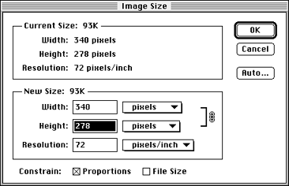
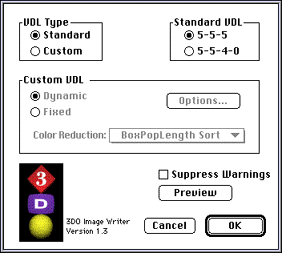

Resizing source art
To save images in the proper size, you have to consider the following
issues:

Figure 1: Dialog for resizing an image in Photoshop.
Photoshop scales the source art to the specified size. If you prefer to crop the source art, use the Canvas Size command.
Note: To generate a PAL image (384 x 288), choose Export >
PAL Image Writer.
The dialog shown in the figure below lets you choose the export options for the image.

Figure 2: 3DO Image Writer dialog.
Note: If the original image has 24 bits per pixel, the tool
discards the bottom three bits of the red, green, and blue part to prepare
the image for the frame buffer and the image will not look exactly as it
did on the Macintosh screen. A custom VDL, discussed below, may be helpful
in this situation.
You can check the Suppress Warnings box if you anticipate warnings during the conversion process and don't want to see them.